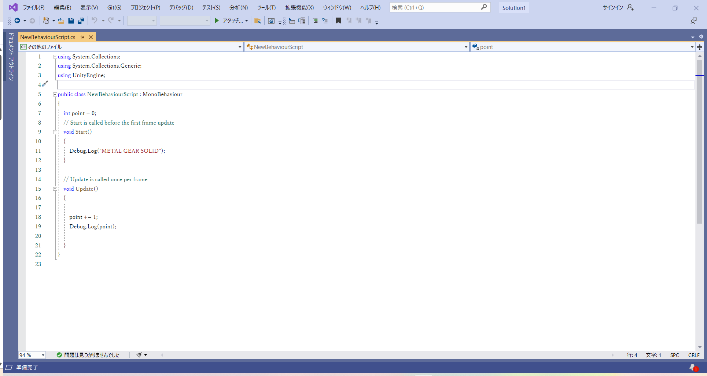

今回は変数とその使い方をざっくり解説していきます。
もはやUnityだけではなく、プログラミングの概念に触れるならどんな言語でも避けて通ることはできません。
頑張って覚えましょう。
変数とは、パソコン上で「数字を入れておく箱」のことです。
好きな時にその中身の数字を持ってきたり変えたりできます。
マリオでいうと、残機数とかスコアとか、残り時間とかの数字がこれです。
実は変数って種類があります。ここにざっくりまとめておきます。ちなみに型って言います。
C#で変数を扱う方法をざっと書き連ねます。
実際に変数を作ってみましょう。前回作ったScriptを開いてください。
今回もDebugLogに表示してみましょう。

上のほうで、変数pointが作られてます。int型ですね。
そして下のほう、Updateで、pointを1増やし、その時の合計をDebugLogに表示するようになってます。
前回ちらっと提示しましたが、Updateはゲーム実行中ずっと繰り返すってやつです。
つまり1増やして表示、1増やして表示を繰り返してるってことです。
書けたら保存して、Unityエディターに戻りましょう。再生ボタン押してみてください。
すごいことになってますね。これで正解です。これでだいたい変数の使い方はOKだと思います。
つぎにすすむ